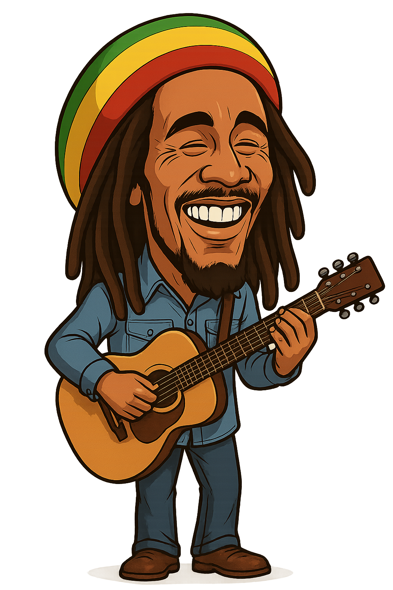

6 Şubat 1945'te Jamaika’nın kırsal bir köyü olan Nine Mile'da dünyaya geldi Robert Nesta Marleyin
babası Norval Sinclair Marley, İngiliz asıllı bir deniz subayıydı. Annesi Cedella Booker ise Afro-Jamaikalıydı(Bu durum, Bob Marley’in çocukluğunda toplumdan dışlanmasına neden oldu çünkü Jamaika’da karışık ırklı çocuklar genellikle önyargıyla karşılanıyordu.).
Babası, Marley henüz küçükken aileden uzaklaştı ve 1955'te öldü. Bob, annesiyle birlikte büyüdü ve erken yaşlardan itibaren müziğe ilgi duymaya başladı. Daha sonra Kingston şehrindeki Trenchtown mahallesine taşındılar. Burası hem yoksul hem de kültürel açıdan zengin bir bölgeydi. Marley burada ska ve rocksteady müzik türleriyle tanıştı ve ilk müzik arkadaşlarını edindi.
Müzik kariyerinin başlangıcı
1963’te Müzik kariyeri başlayan Bob Marley, Peter Tosh ve Bunny Wailer ile birlikte The Wailers grubunu kurdu. İlk yıllarda ska ve rocksteady tarzında müzik yaptılar. Ancak zamanla reggae müziğinin öncü isimlerinden biri haline geldiler. Grubun müziği hem eğlenceli hem de derin mesajlar içeriyordu: Ezilenler için adalet, özgürlük, birlik ve barış.
1972'de Island Records ile anlaştılar ve “Catch a Fire” albümüyle uluslararası tanındılar. Ardından gelen “Burnin’”, “Natty Dread”, “Rastaman Vibration”, “Exodus” ve “Kaya” albümleri dünya çapında büyük ses getirdi.
Rastafaryanlık ve Mesajları
Bob Marley, Rastafaryanlık inancını benimsedi. Bu inanç, Afrika kökenli Jamaikalıların kimlik, özgürlük ve Tanrı ile olan bağını temel alan bir yaşam felsefesiydi. Marley’in saç stilinden esrar kullanımına kadar birçok yönü bu inancın bir parçasıydı.
Şarkıları sadece müzik değil, aynı zamanda bir mücadele aracıydı. “Get Up, Stand Up”, “War”, “Redemption Song” gibi eserler, politik ve toplumsal mesajlarla doluydu.
1977 yılında, Bob Marley’in ayağında bir yara fark edildi. Doktorlar bunun akral lentiginöz melanom adı verilen nadir bir cilt kanseri türü olduğunu teşhis etti. Marley, Rastafaryan inancı gereği vücut bütünlüğüne müdahale edilmesini istemediği için ayağının kesilmesini reddetti. Bu nedenle kanser zamanla tüm vücuduna yayıldı.
1980 yılında, son turnesini gerçekleştirdi. New York’taki Madison Square Garden konseri, efsanevi performanslarından biri olarak kayda geçti.
11 Mayıs 1981 tarihinde, sadece 36 yaşında iken Miami, ABD'de hayata gözlerini yumdu. Ölmeden önce oğluna söylediği son söz şu oldu:
"Money can't buy life." (Para hayatı satın alamaz.)

Concrete Jungle
Stir It Up
Get Up, Stand Up
I Shot the Sheriff
No Woman, No Cry
Lively Up Yourself
War
Roots, Rock, Reggae
Jamming
Three Little Birds
One Love
Exodus
Is This Love
Sun Is Shining
Africa Unite
Zimbabwe
Redemption Song
Could You Be Loved
Bob Marley, reggae müziğini Jamaika sınırlarından çıkararak dünya çapında tanınmasını sağladı. Bugün reggae dendiğinde ilk akla gelen isim hâlâ odur. Müziği, sadece eğlence değil; aynı zamanda isyan, özgürlük ve umut mesajı taşıyordu. "One Love", "Get Up, Stand Up", "Redemption Song" gibi eserleri milyonlarca kişiye ilham verdi ve Reggae müziğinin küresel yayılmasına öncülük etti.
Marley, politik şiddetle çalkalanan Jamaika’da hem sol hem sağ gruplar arasında birleştirici bir figür oldu. 1978’deki “One Love Peace Concert”te iki rakip siyasetçiyi sahneye çıkararak el ele tutuşturması tarihi bir andı. Şarkılarında ırkçılık, eşitsizlik ve sömürgeciliğe karşı sergilediği güçlü duruş Bob Marleyi barış ve özgürlük sembolü haline getirdi.
Bob Marley, Rastafaryanlık inancını küresel sahneye taşıdı. Bu inanç sistemi; doğallık, Afrika kökenli bilinç, ruhani özgürlük gibi değerlere dayanır. Dreadlock (rasta saç), ganja kullanımı ve “Jah” inancı onunla birlikte tüm dünyada tanındı. Rastafaryanlık, Bob Marley sayesinde milyonlarca insanın dikkatini çekti ve yaygınlaştı.
1994'te Rock and Roll Hall of Fame’e alındı. 2001’de Grammy Yaşam Boyu Başarı Ödülü kazandı. “Legend” adlı derleme albümü hâlâ tarihin en çok satan reggae albümüdür. Filmlerde, belgesellerde, t-shirtlerde ve sokak sanatında hâlâ onun yüzü, sözleri ve sesi kullanılmaktadır.
Bob Marley’in müziği, sadece Jamaika’ya değil, Afrika’dan Avrupa’ya, Amerika’dan Asya’ya kadar her coğrafyada yankı buldu. Müziği; dili, dini, ırkı ne olursa olsun herkese hitap eden bir insanlık mesajı taşıyordu. Bugün bile birçok özgürlük hareketinde onun şarkıları bir sembol olarak kullanılmaya devam ediyor.